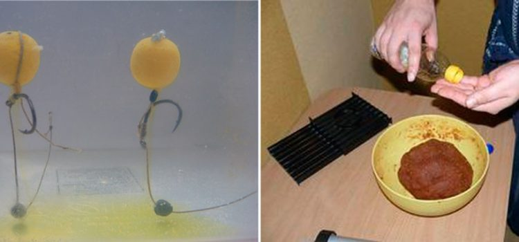

Цей вид приманки, під назвою " Pop Up, є штучною насадкою, що застосовується при лові такої риби, як короп або сазан. У цій статті буде розказано, як зробити плаваючі бойли своїми руками.
Бойл - це кулька, діаметром близько 2-x см, що має яскраву розмальовку i до складу якого входять різні інгредієнти, як тваринного, так i рослинного походження. Крім цього, до складу додані підсилювачі смаку i запаху.
Сучасний столовий горох для варки навіть не потрібно замочувати, можна сміло відразу варити. Але можна й замочити, гірше не буде. Якщо замочували, то воду потрібно змінити на свіжу – горох розвариться скоріше.
Приготування: Беремо каструлю(яку нешкода), бажано з товстими стінками. Тоді не так сильно буде горох приставати і підгоряти. В каструлю наливаємо холодну воду і засипаємо горох. Доводимо до кипіння і відразу ставимо мінімальний вогонь під нещільно закритою кришкою.